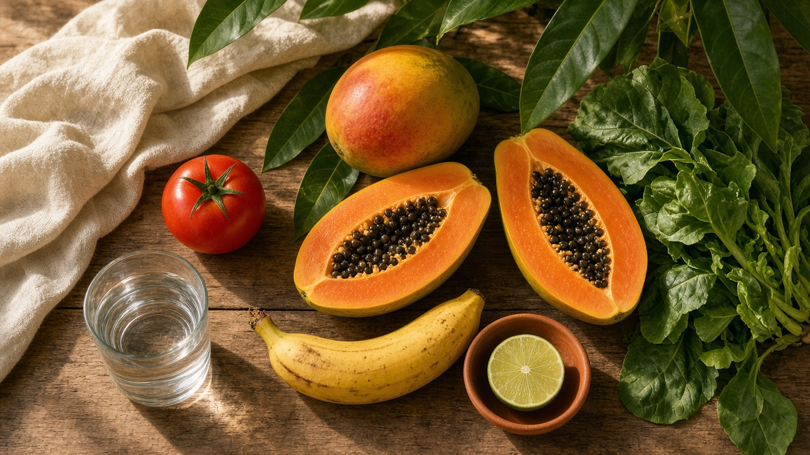
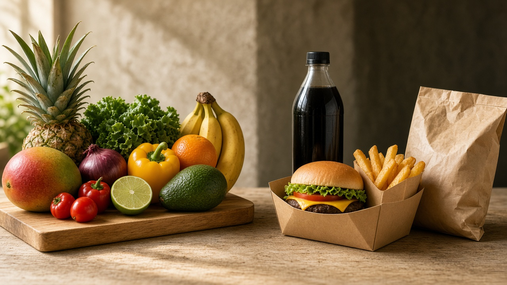
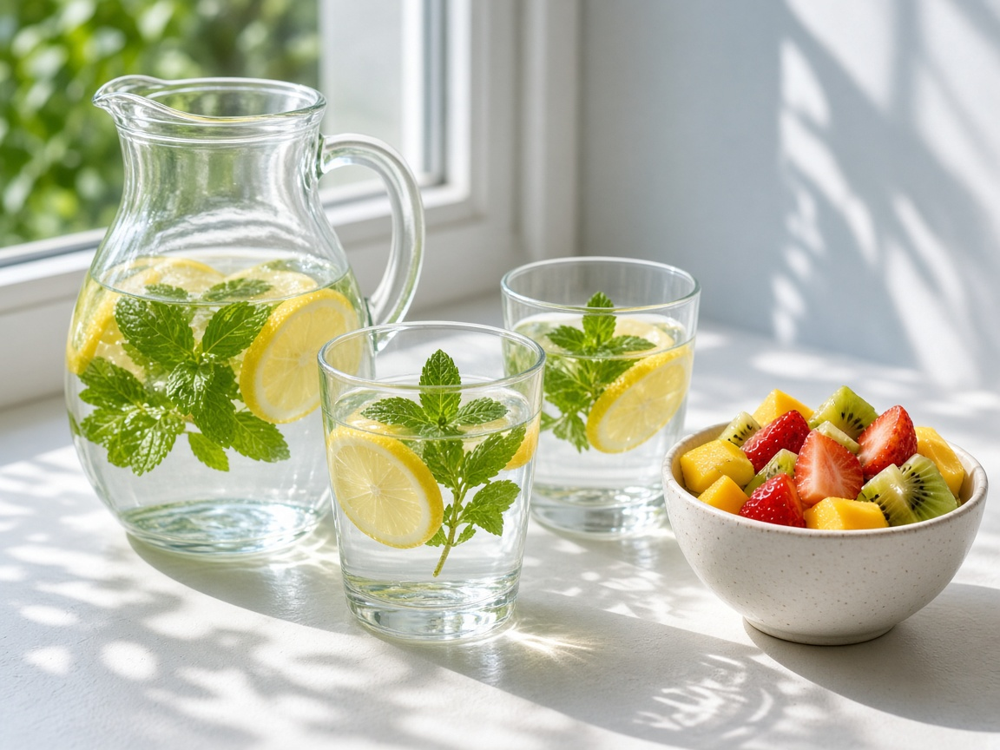
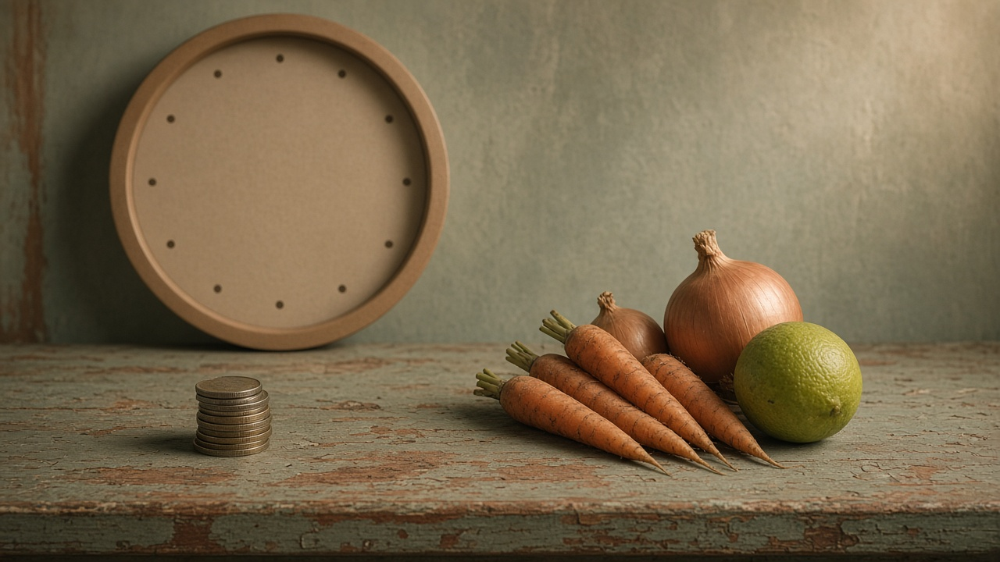
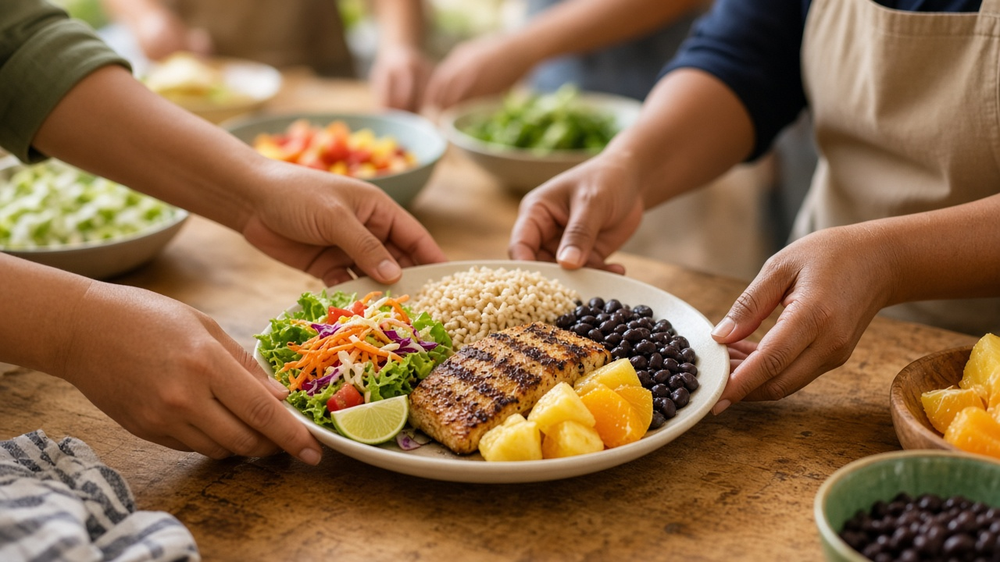
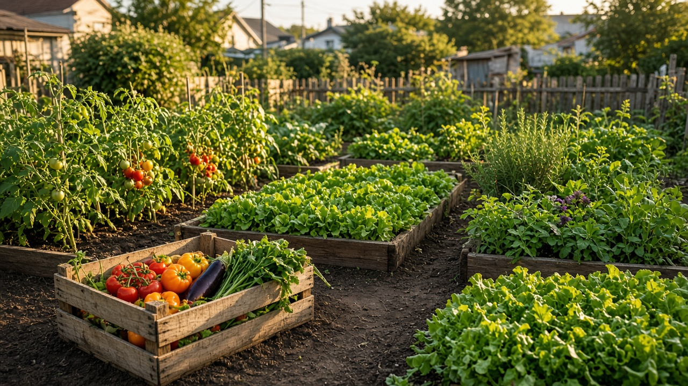

Salud pública · Nutrición y dietética
Hábitos alimentarios saludables en la población adulta
Plan de intervención en la Urbanización Britania, Cartagena de Indias. Prevención primaria a partir de una encuesta a 27 adultos.
Cartagena, 28 de octubre

En una mirada
Lo que el informe deja listo para contar

1 · Diagnóstico
Intervenir ahora, mientras el hábito todavía se puede cambiar
La alimentación inadecuada es un riesgo modificable de exceso de peso, diabetes tipo 2, hipertensión y enfermedad cardiovascular.
Mínimo diario de frutas y verduras que recomienda la OMS, cerca de cinco porciones, para prevenir las ECNT.
De los adultos colombianos tenía exceso de peso en la ENSIN 2015. El problema ya es nacional.
Persona de Britania llegaba a tres porciones de fruta. Solo el 25,9 % comía dos o más porciones de verduras.
La población encuestada es joven: el 85,2 % tiene entre 18 y 29 años. Cambiar el hábito en esta etapa evita que se consolide antes de la enfermedad.
Línea base · n = 27
Una comunidad joven, estudiante y de estratos bajos
Mujeres. Hombres: 37 % (10 personas).
Entre 18 y 29 años. Hay 2 personas de 40–49 y 2 de 50–59.
Estudiantes. Empleados: 22,2 %. Otras situaciones: 18,5 %.
Estratos 1 a 3. El 66,6 % vive en estrato 1 o 2.
Tabla 1 del informe. Encuesta propia, formulario en línea, Urbanización Britania.
Lo que come hoy
La distancia frente a una alimentación saludable
No consume ninguna porción de fruta al día. El 51,9 % consume solo una.
Come ninguna o una porción de verduras. Solo el 25,9 % llega a dos o más.
Consume ultraprocesados de 1 a 4 veces por semana. El 7,4 % los come a diario.
Bebe menos de 1,5 litros de agua al día. El 63 % sí hace tres tiempos de comida.

Tabla 2 y sección 5.1. No mezclar “1 a 4 veces por semana” (88,9 %) con “3 o más veces” (33,3 %): miden cortes distintos.
Figura 1 del informe
Los siete riesgos que el grupo priorizó
Porcentaje de participantes (n = 27). La barra usa la misma escala del informe, de 0 a 90. Bebidas azucaradas: algunas veces o frecuente.
Figura 2 · principal dificultad
El tiempo pesa más que el precio, y el precio pesa mucho
Escala de 0 a 50, como en la figura original. Suma 100 %: cada persona marcó una dificultad principal.

Lo que ya se puede afirmar
Saber no basta, y casi todos quieren participar
Se percibe sin conocimientos suficientes sobre alimentación saludable. Meta: bajar a 30 % o menos.
Ya había recibido orientación. La información aislada no cambió el hábito: hace falta práctica.
Dijo que sí participaría (59,3 %) o que tal vez (29,6 %). Es la mayor fortaleza del proyecto.
2 · Objetivos SMART
Una meta general y cinco cambios medibles
Promover hábitos saludables en los adultos de Britania, con educación alimentaria y nutricional, para reducir el riesgo de enfermedades crónicas.
| Qué cambiar | Hoy | Meta al cerrar los talleres |
|---|---|---|
| Quienes se sienten sin conocimientos suficientes | 59,3 % | ≤ 30 % |
| Sin fruta a diario / con 0–1 porción de verduras | 40,7 % · 74,1 % | ≤ 20 % · ≤ 50 % |
| Bebidas azucaradas / ultraprocesados ≥ 3 veces por semana | 74,1 % · 33,3 % | ≤ 50 % · ≤ 20 % |
| Agua menor a 1,5 litros al día | 55,5 % | ≤ 30 % |
| Asistir a mínimo 2 de 3 sesiones y elaborar un menú económico | Proceso | ≥ 80 % |
Tabla 3. Cada meta tiene indicador, línea base y plazo: el cierre del ciclo de talleres.
3 · Metodología
Prevención primaria, en seis pasos
- 1Elegir el problema y el lugar: hábitos poco saludables en adultos de la Urbanización Britania.
- 2Diseñar y aplicar la encuesta en línea. Respondieron 27 personas.
- 3Tabular y priorizar: frutas, verduras, tiempo, precio y conocimientos.
- 4Diseñar el programa según el presupuesto, el tiempo y los alimentos disponibles.
- 5Hacer los talleres, los menús económicos y la orientación de horarios.
- 6Volver a aplicar el cuestionario y dejar recomendaciones de continuidad.

Lo que se pone en práctica
Talleres cortos, visuales y con comida real
Guías alimentarias basadas en alimentos para la población colombiana mayor de 2 años (ICBF y Ministerio de Salud, 2020). La presentación de clase se apoyó en material visual de porciones y en guías de menú.
Humanos, instrumentos, material educativo, alimentos de demostración y tecnología. Tabla 4 del informe.
4 · Sistema de evaluación
Proceso para saber si se hizo. Impacto para saber si cambió.
Cobertura: participantes sobre convocados. Meta ≥ 80 %.
Sesiones hechas sobre sesiones planeadas. Meta 100 %.
Menús saludables y económicos elaborados. Meta ≥ 80 % de quienes asisten.
Conocimientos insuficientes: 59,3 % → ≤ 30 %.
Sin fruta diaria: 40,7 % → ≤ 20 %. Verduras 0–1: 74,1 % → ≤ 50 %.
Bebidas azucaradas 74,1 % → ≤ 50 %. Ultraprocesados ≥ 3/semana: 33,3 % → ≤ 20 %.
Agua < 1,5 L: 55,5 % → ≤ 30 %.
Mismo cuestionario antes y después, preguntas de frecuencia, barreras e interés, y registro de asistencia. Así el cambio se puede comparar.
Figura 3 · no es un resultado medido
De la línea base a la meta esperada
Sin fruta diaria
0–1 verdura
Bebidas azucaradas
Ultraprocesados ≥ 3
Agua < 1,5 L
Saber insuficiente
Tabla 6. La columna de seguimiento del informe dice “por medir” en los seis indicadores.
5 · Cumplimiento
La fórmula ya está. El segundo dato, no.
(antes − después) / (antes − meta) × 100
Si quien no come fruta a diario bajara de 40,7 % a 25 %, el cumplimiento sería (40,7 − 25) / (40,7 − 20) × 100 = 75,8 %. Llegar a 100 % o más significa que la meta se cumplió.
No decir que los hábitos ya mejoraron. Decir que el diagnóstico justificó la intervención y que el cuestionario se vuelve a aplicar al cerrar.
Con 27 personas el resultado es descriptivo. No representa a toda la urbanización. El informe recomienda ampliar la recolección.
6 · Discusión
El plato también lo decide el entorno
Organizar horarios y preparar comidas rápidas, porque el tiempo fue la barrera principal.
Proponer menús con alimentos accesibles, porque el precio fue la segunda.
Hablar breve, práctico y visual, porque la audiencia es joven.
No generalizar: 27 casos describen a quienes respondieron.
Comisión sobre Determinantes Sociales de la Salud, OMS, 2009. Las condiciones en que se nace, vive, estudia y trabaja condicionan el hábito.
Para que no se quede en un ciclo
Cinco formas de sostener el cambio

- 1Formar promotores voluntarios que sigan con los talleres.
- 2Articular la Junta de Acción Comunal, los colegios y el centro de salud cercano.
- 3Abrir huertas, mercados frescos o compras colectivas para bajar el precio.
- 4Compartir recetarios económicos y un plan semanal por redes y mensajería.
- 5Repetir los indicadores cada seis meses y ajustar lo que no se mueva.
Cierre
Tres ideas para dejar en la sustentación
Recomendación del informe: ampliar la muestra y sostener el trabajo con líderes comunitarios e instituciones locales.
Referencias del informe
De dónde salen las cifras y los marcos
Instituto Colombiano de Bienestar Familiar y Ministerio de Salud y Protección Social. (2020). Guías alimentarias basadas en alimentos para la población colombiana mayor de 2 años. Bogotá.
Ministerio de Salud y Protección Social, ICBF y otros. (2019). Encuesta Nacional de la Situación Nutricional de Colombia 2015 (ENSIN 2015). Bogotá.
Organización Mundial de la Salud. (2020). Alimentación sana [nota descriptiva].
Organización Mundial de la Salud. (1986). Carta de Ottawa para la promoción de la salud. Ottawa.
Comisión sobre Determinantes Sociales de la Salud. (2009). Subsanar las desigualdades en una generación. OMS.
Línea base: encuesta propia del grupo en la Urbanización Britania (n = 27).
Las fotografías de esta presentación son ilustraciones. No son registros del trabajo de campo. El PDF original está en fuente/informe-salud-publica.pdf.